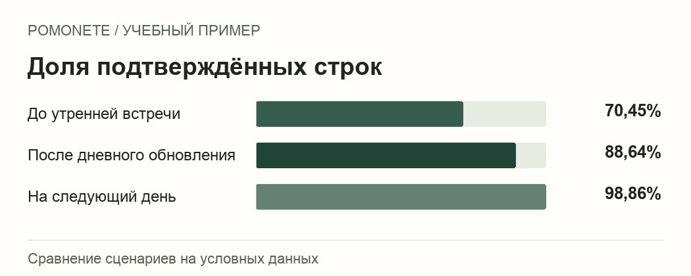

Как измерить, какие данные Яндекс Маркета успели обновиться к утру
Проверка операционного отчёта селлера по доле подтверждённых строк к контрольному сроку.
Селлер Яндекс Маркета хочет видеть утренний счёт денег. В разные дни к встрече готова разная часть подтверждённых операций. Сначала оценим уровень готовности независимой метрикой и определим, какую таблицу можно использовать для принятия решения.
Как узнать ожидаемое число строк
Возьмите операционные события, для которых обычно есть подтверждение, и удалите документированные исключения. Для каждой строки сохраните статус, источник и дату, когда она стала окончательной. Если событие ещё не наступило, обращайтесь с ним отдельно от задержанной записи.
Чтобы пересобрать расчёт «Доля подтверждённых строк» для своего магазина, перенесите в него исходные числа. В формуле A обозначает «строки с подтверждением», B обозначает «ожидаемые строки периода». Деление отвечает за долю, умножение на 100 переводит её в проценты. При нулевом знаменателе долю оставляют пустой. Запишите рядом период и охват каждого среза. Если для одной строки известна только оценка, оставьте пояснение непосредственно рядом с ней: по итоговой цифре источник уже не восстановить.
Доля подтверждённых строк = A ÷ B × 100
| Условие | Строки с подтверждением | Ожидаемые строки периода | Доля подтверждённых строк |
|---|---|---|---|
| До утренней встречи | 186 | 264 | 70,45% |
| После дневного обновления | 234 | 264 | 88,64% |
| На следующий день | 261 | 264 | 98,86% |

В сценарии «До утренней встречи» в формулу подставляем строки с подтверждением = 186, ожидаемые строки периода = 264. Получается 70,45%. Часть данных от площадки ещё формируется или ждёт проверку.
В сценарии «После дневного обновления» в формулу подставляем строки с подтверждением = 234, ожидаемые строки периода = 264. Получается 88,64%. Пришли дополнительные документы и обновились связанные записи.
В сценарии «На следующий день» в формулу подставляем строки с подтверждением = 261, ожидаемые строки периода = 264. Получается 98,86%. Остались исключения, которые пока проверяют вручную.
Если «До утренней встречи» взять за исходную точку, «После дневного обновления» меняет показатель «доля подтверждённых строк» на 18,18 п. п., а «На следующий день» на 28,41 п. п.. Между двумя последними строками разница составляет 10,23 п. п. при вычитании второй из третьей. Смотрите, какой именно вход изменился между строками. Если менялись объём и условия одновременно, итог сравнения относится ко всему сочетанию.
От меньшего результата до большего в таблице 28,41 п. п.. При переходе из «После дневного обновления» со значением 88,64% в «На следующий день» со значением 98,86% условия заданы явно. Этот интервал описывает три построенных случая, а для вероятности исходов нужна история. В рабочей записке полезно назвать минимальное значение, при котором сохранится ваше решение. Если такой порог попадает внутрь интервала, подтвердите спорный параметр до того, как менять процесс.
Что показывает низкая доля
Причиной может быть изменение формирования отчёта, крупная новая партия или ошибка импорта. Сравните типы пропусков и даты. При одинаковой сумме отчёта новая доля готовности может означать, что одна категория осталась без подтверждённых затрат.
Для исходной выборки пригодится такой набор материалов: исходная выгрузка, журнал загрузок и контрольные суммы. Зафиксируйте строки и границы периода, по которым собирался показатель «доля подтверждённых строк». Копию выгрузки держите рядом с рабочим расчётом. По ней коллега сможет проверить, что строку отнесли к нужному сценарию, а единица измерения сохранилась при переносе.
Перед обновлением отчёта сохраните источник, параметры запроса, время выгрузки и число строк на каждом шаге. Сначала проверяют ключ и единицу наблюдения, потом сравнивают итоговые суммы. Одно и то же значение в двух строках может быть законным: совпадение суммы само по себе слабо доказывает дубль. Подключив справочник, проверьте, какие записи не сопоставились, и разнесите их по причинам до пересчёта показателя.
Что сильнее всего меняет результат
Здесь проверим устойчивость числа 88,64%, полученного для «После дневного обновления». Настраиваемые входы: «строки с подтверждением», «ожидаемые строки периода». Меняем по одному параметру с шагом около 10% от его значения. Для небольших исходных чисел разница округляется до доступной целой единицы. Сдвиги ниже относятся к исходному сценарию, поэтому читатель может сопоставить их в одних единицах.
- «Строки с подтверждением» меняется с 234 на 257. При прежних остальных входах получается 97,35%, сдвиг составляет 8,71 п. п..
- «Ожидаемые строки периода» меняется с 264 на 290. При прежних остальных входах получается 80,69%, сдвиг составляет -7,95 п. п..
Наибольшее отклонение в примере связано с параметром «строки с подтверждением» и составляет 8,71 п. п.. Сохраните в расчёте, почему выбран именно этот сдвиг. После следующей выгрузки вместо учебных шагов попробуйте подставить разницу между наблюдавшимися периодами. Так проверите, насколько устойчива цифра при фактических колебаниях вашего магазина.
Оцените долю не только по строкам, но и по обороту сопровождаемых заказов. Несколько дорогих операций могут сильнее влиять на отчёт. Разделение по суммам помогает не давать одинаковый приоритет любому пропуску.
Как менять ритм встречи
Покажите подтверждённый результат и диапазон итогового. Если решение зависит от неизвестной суммы, назначьте конкретный срок повторной проверки. В дни стабильного выпуска можно сократить контроль, сохранив возможность восстановления деталей.
При повторном импорте берите ту же исходную выборку и фиксируйте, какие записи действительно изменились. В стабильном отчёте сумма после второго прогона того же набора остаётся равной первой. Отложенные корректировки могут изменить поздний снимок, поэтому журнал версий пригодится для ответа на вопрос, когда возникло отличие. Дайте пользователю отчёта ссылку на строку, которую можно проверить вручную.
Оставьте в рабочей таблице причину выбора. Когда селлеры Яндекс Маркета возвращаются к расчёту «доля подтверждённых строк», им пригодятся полученное значение, ответственный и дата пересмотра. Если в решении использовался сценарий «После дневного обновления», перенесите вместе с ним допущения. При обновлении источников сначала проверьте одну исходную строку и только потом пересчитывайте сводку.